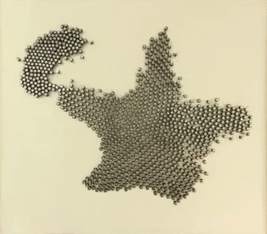
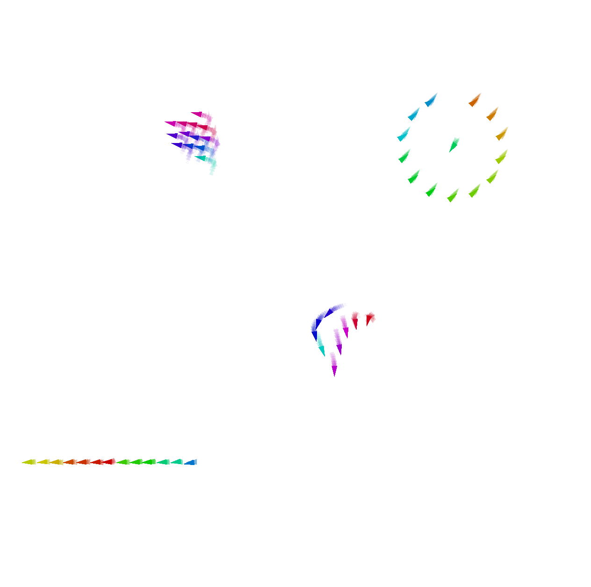
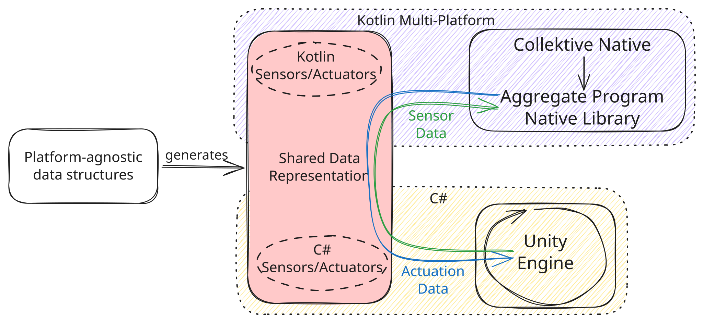
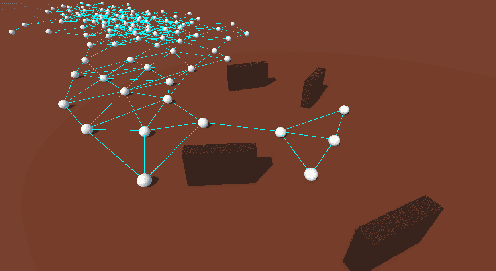
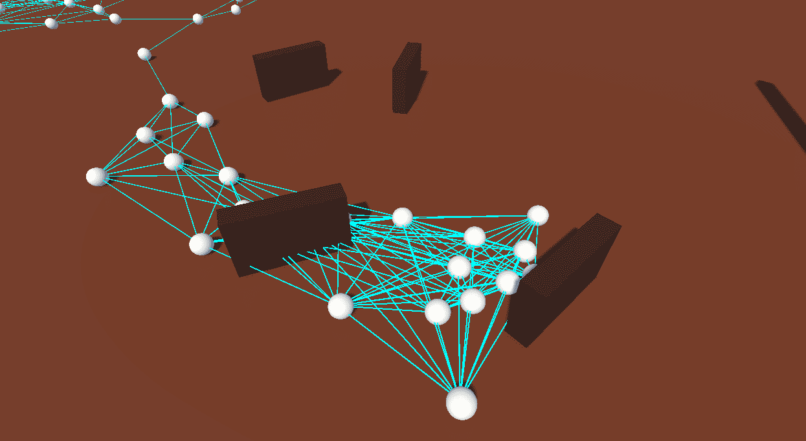
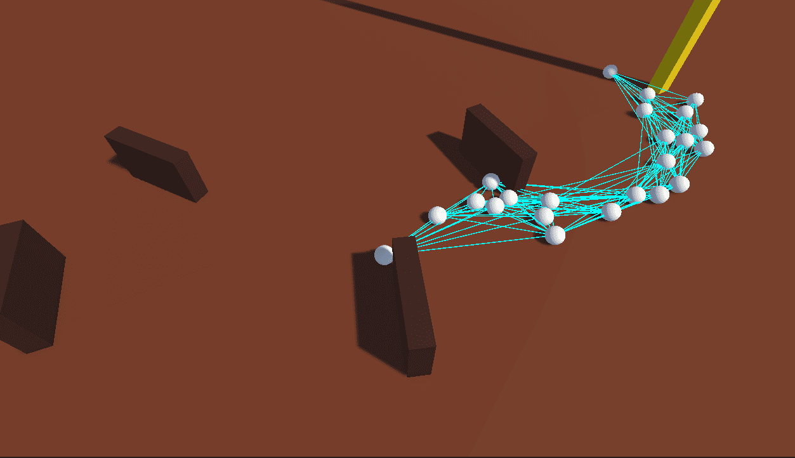
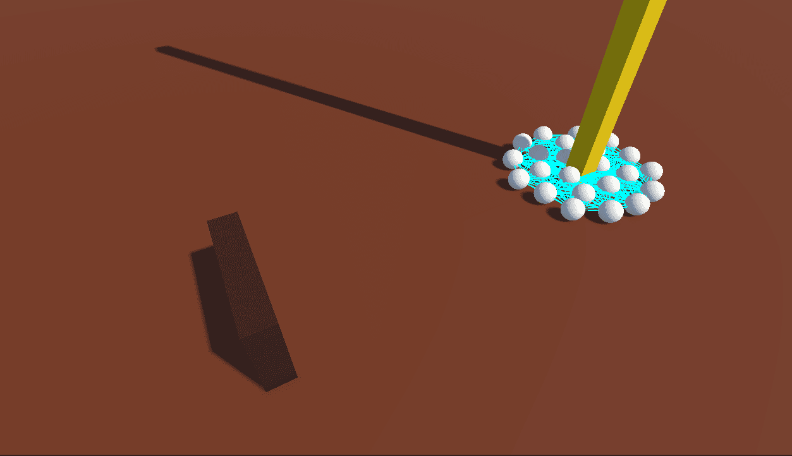
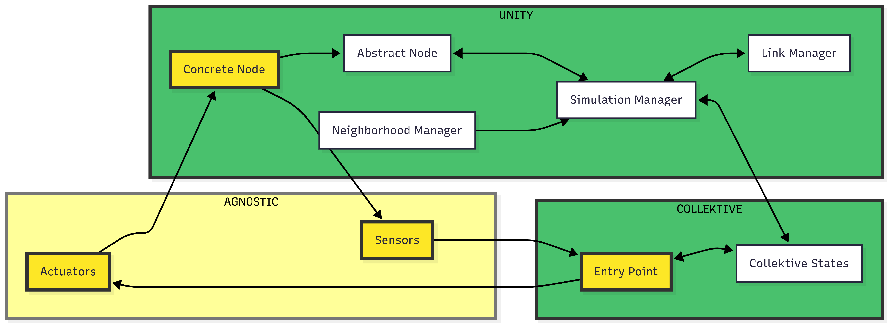

High-Fidelity Simulation of Aggregate Computing Systems
with Collektivity
Filippo Gurioli, Martina Baiardi, Angela Cortecchia, and Danilo Pianini
Department of Computer Science and Engineering
University of Bologna, Cesena, Italy
Context: Collective Adaptive Systems
-
Collective Adaptive Systems are made of many situated and interacting devices.
-
Their behaviour emerges from local interactions under mobility, failures, and changing environments.
-
Examples include robot swarms, sensor networks, and IoT applications.

CAS Programming Frameworks
Aggregate Programming lets developers express collective behaviour instead of orchestrating every device.
- The same program runs repeatedly on each device.
- Devices exchange messages with neighbours.
- The state is represented as a computational field, which maps devices (and time) to a value.
Examples: Collektive, Scafi, Protelis, FCCP.

Validation of CAS
Simulation is a widely used approach for validating Collective Adaptive Systems, which faces a persistent trade-off:
Lower fidelity Simulation
- Scales easily to large populations
- Supports collective adaptive systems execution
- Simplifies physics and environment — reduced realism
Higher fidelity simulation
- More realistic physics
- Richer environments
- No support for collective adaptive systems execution
Game Engines
A promising direction to break this trade-off is to leverage game engines as high-fidelity simulation platforms for Collective Adaptive Systems.
Game engines already provide capabilities that CAS simulators often need:
- real-time 3D rendering
- physics and collisions
- interactive scene authoring
- complex environments
- support for mixed reality and digital twins
Examples: Unity, Unreal Engine, CryEngine
The open question:
can we run aggregate programs inside such an environment, not just visualize traces?
Requirements
-
Agnosticism to the case study
the integration should not be tailored towards any specific CAS case study.
-
Bidirectional Communication
the engine must provide the aggregate program with the necessary sensory data, while the aggregate program must send actuation commands back to the engine to drive the evolution of the simulation.
-
High-Performance
adding realism will inevitably impact on scalability, the system should be capable to scale to the order of hundreds of deployed devices.
Proposal: Collektivity
Collektivity integrates Collektive with the Unity game engine.
Unity
- owns the world
- computes physics
- maintains neighbourhoods
- returns perceptions from the environment
- written in C#
- supports external plugins and custom entity definitions
Collektive
- computes collective behaviour
- stores device state
- returns actuations commands to execute
- written in Kotlin Multiplatform
- supports native compilation and it can be easily integrated with different runtimes
Design

Shared Data Model Challenge
Collektivity uses Protocol Buffers to define the data exchanged across Unity and Collektive.
- one schema
- generated C# bindings for Unity
- generated Kotlin bindings for Collektive
- explicit
SensorsandActuatorsmessages
message Actuators {
Vector3 targetPosition = 1;
}
message Sensors {
double sourceIntensity = 1;
Vector3 currentPosition = 2;
repeated Vector3 obstacles = 3;
}
Interoperation Challenge
Unity and Collektive do not share the same runtime:
- Unity runs on a custom .NET environment.
- Collektive is Kotlin Multiplatform.
- Existing Collektive targets cannot simply run inside Unity.
Two approaches were compared:
- Socket-based inter-process communication.
- Native library invocation through FFI.
Comparison
Socket backend
- Unity and Collektive run as separate processes.
- Data crosses TCP sockets.
- More flexible, but expensive.
Native backend
- Collektive is compiled as a native shared library.
- Unity invokes it through FFI.
- Much faster, so it was selected.
| Metric | Socket-based IPC | Native library with FFI | Speedup |
|---|---|---|---|
| Median | 200 ms | 550 µs | 363x |
| Mean | 200 ms | 484 µs | 456x |
| p95 | 200 ms | 612 µs | 719x |
| p99 | 202 ms | 850 µs | 747x |
Native Execution Through FFI
The socket-based approach was over 450x slower than the native library approach, with a peak of over 700x.
Collektive is compiled as a native library and invoked from Unity through FFI.
interface Engine {
fun step(id: Int, sensorData: Sensors): Actuators
fun subscribe(node1: Int, node2: Int): Boolean
fun unsubscribe(node1: Int, node2: Int): Boolean
fun addNode(id: Int): Boolean
fun removeNode(id: Int): Boolean
}
Runtime Cycle
At every simulation tick:
- Unity samples the world state.
- Unity calls
step(id, sensors). - Collektive runs one aggregate round.
- Collektive returns actuator commands.
- Unity applies the commands.
- Unity updates neighbourhood links.
This keeps the division of responsibilities clean:
- Unity owns embodiment and environment.
- Collektive owns distributed computation semantics.
- The schema owns cross-platform data exchange.
Simple 3D Scenario
The first exemplar deploys devices in a simple 3D arena with obstacles.
- 100 Devices move toward a source of interest.
- They avoid nearby obstacles and other devices.
- They use distance-based neighbourhoods (10 Unity units).
- Aggregate rounds run at 20Hz.




Richer Unity Environment
The same aggregate behaviour was tested in Unity’s Oasis environment.
- Trees, rocks, bushes, and terrain become physical obstacles.
- The source of interest is placed inside a tent across the arena.
- 100 nodes were deployed.

What The Paper Shows
Achieved
- Collektive can be executed from Unity.
- Unity can drive aggregate rounds.
- Native FFI makes the bridge practical and efficient.
Still open
- More complex aggregate programs.
- Larger populations: 1,000 and 10,000 nodes.
- Adoption of Entity Component System (ECS) pattern.
Conclusion
Collektivity is a toolchain for running high-fidelity aggregate programs written in Collektive on top of Unity.
Source code and benchmark artifacts are publicly available:
Thank you
Architecture
